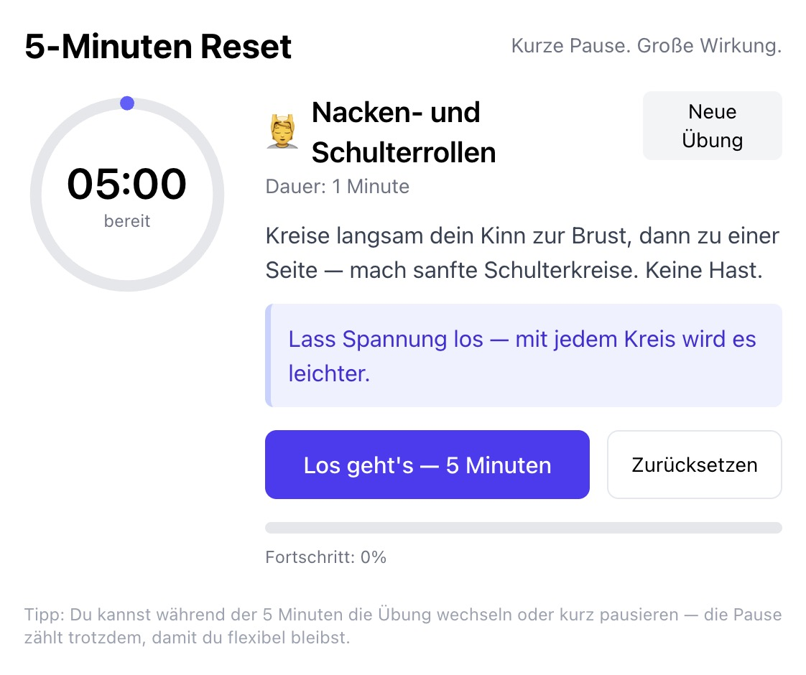
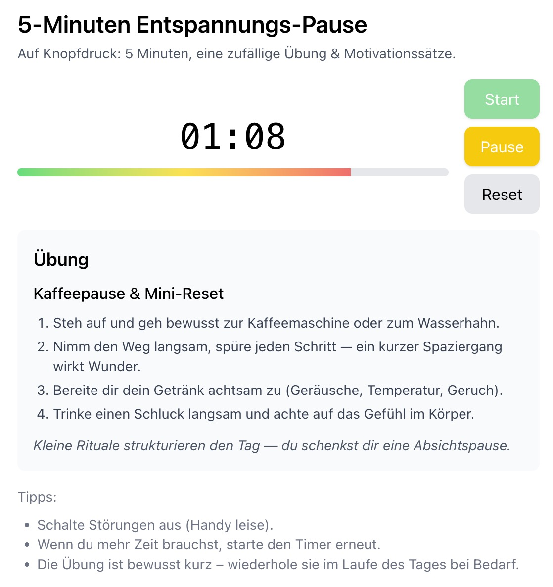
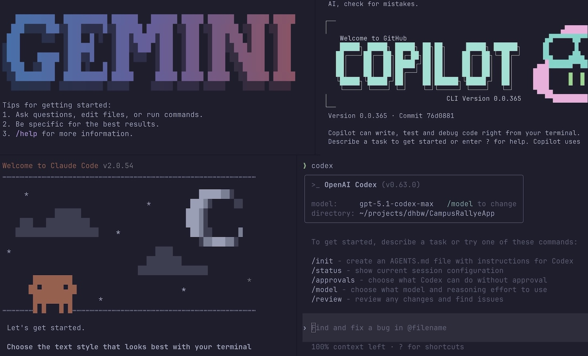

Popup blockiert - bitte mit S die Speaker View öffnen.
KI Coding Tools
Vibe Coding & AI Assisted Engineering
Ein Überblick über aktuelle Vorgehensweisen und Werkzeuge
Erik Behrends · DHBW Lörrach
November 2022 wurde ChatGPT veröffentlicht
The hottest new programming language is English.
Vibe Coding
There's a new kind of coding I call
"vibe coding", where you fully give in to the
vibes […] and forget that the code even exists.
[…]
I'm building a project or webapp, but it's
not really coding - I just see stuff, say stuff,
run stuff, and copy paste stuff, and it mostly works.
Vorgehensweisen
Vibe Coding
AI Assisted Engineering
Werkzeuge
Anwendungen im Browser
Entwicklungsumgebungen (IDEs)
Command Line Interfaces (CLIs, im Terminal)
Stand März 2026: Vibe Coding meist im Browser,
Browser-Tools in KI-Chats bieten Vibe Coding
Viele KI-Chats können Code generieren und in einer isolierten
Umgebung (Sandbox) ausführen.
Bau eine App, die per Knopfdruck 5 Minuten rückwärts zählt und
zufällig eine Aktivität zur Entspannung zeigt. Beispiele: Atemübung,
Strecken, Visualisierung, Kaffee holen, usw. Denk dir passende
Übungen aus. Mit motivierenden Texten!


„One Shot“-Ergebnisse des Prompts auf der vorigen Folie
Viele haben das Terminal bzw. die Kommandozeile als Umgebung für
Vibe Coding (wieder-)entdeckt.
→ Vibe Coding in einer rein textbasierten, fokussierten Umgebung.
Manche haben mehrere Agents in eigenen Terminals laufen, die
verschiedene (Teil-)Aufgaben übernehmen — ist das noch Vibe Coding
im ursprünglichen Sinn?

Wann ist Vibe Coding passend?
Schnelles Ausprobieren und Explorieren von Ideen
Kleine Snippets, Lernbeispiele, Prototyping
Erstellung kompletter Apps 🤔 ?
AI Assisted Engineering
Im Gegensatz zu reinem Vibe Coding bezeichnen wir „professionelle
Zusammenarbeit“ mit der KI als
AI Assisted Engineering.
CLIs im Terminal als Assistenten
Im Terminal lässt sich planvoll mit der KI an echten
Engineering-Aufgaben arbeiten.
Onboarding
Architektur und zentrale Konzepte eines Repositories erklären
lassen.
Qualität
Code auf Bugs, Sicherheitsprobleme und offensichtliche Smells
prüfen.
Migrationen
Updates planen und passende Patches für Abhängigkeiten
vorbereiten.
Systematisches Coding
Anforderungen zuerst in Tests oder einen klaren Plan übersetzen.
Typische Tätigkeiten eines Software Engineers — hier mit
KI-Unterstützung.
Fähigkeiten von KI in IDEs
Tab-Completion
Code-Vervollständigungen direkt beim Tippen.
Chat im Editor
Fragen direkt im Code-Kontext stellen.
Plan- und Agent-Modus
Komplexe Aufgaben strukturieren und Änderungen umsetzen.
Multi-Agenten
Tests, Refactoring oder Doku gezielt an Spezialisten geben.
Aus der IDE lassen sich Aufgaben direkt an Cloud-Agents delegieren,
zum Beispiel an GitHub oder OpenAI/Codex.
Coding-Agents in der Cloud
Cloud-Agents arbeiten eigenständig mit ganzen Repositories und
werden meist im Browser gesteuert.
Arbeitsweise
Sie analysieren Codebasen, planen Änderungen und setzen sie
schrittweise um.
Outputs
Branches, Commits und Pull Requests machen die Arbeit
nachvollziehbar.
IDEs und CLIs delegieren das Heavy Lifting an diese Agents. Sie
eignen sich besonders für größere Änderungen, Migrationen und lang
laufende Aufgaben.